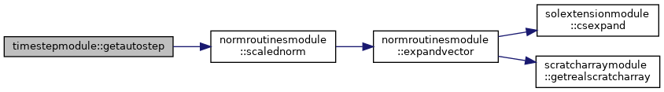
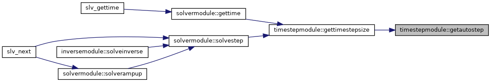
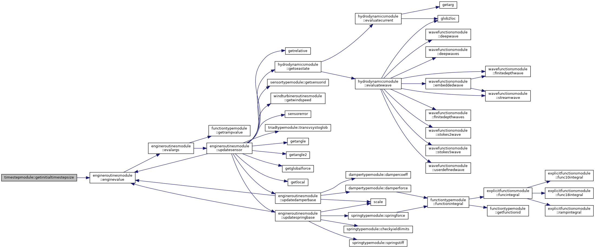
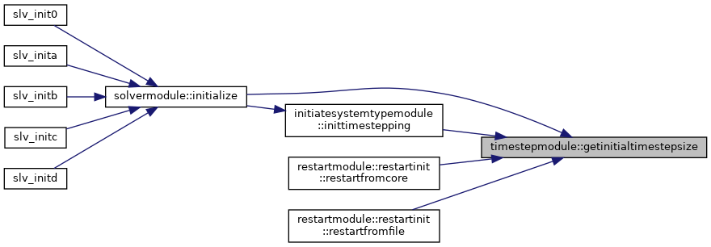
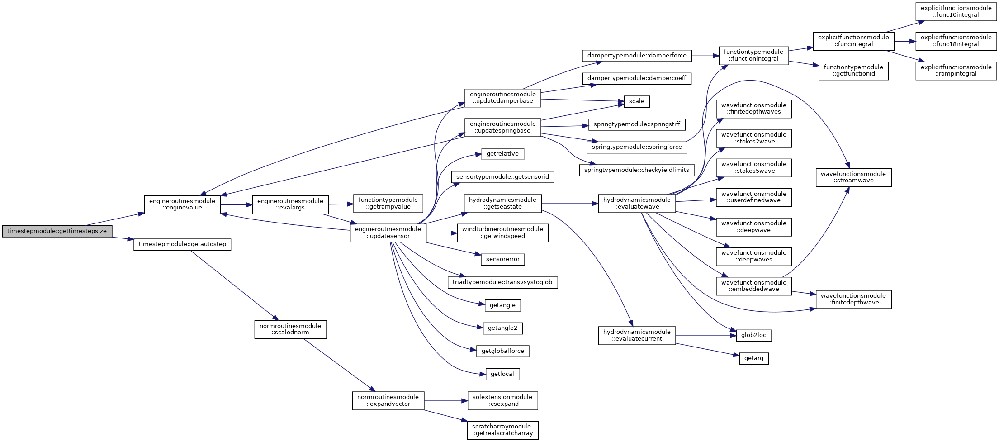
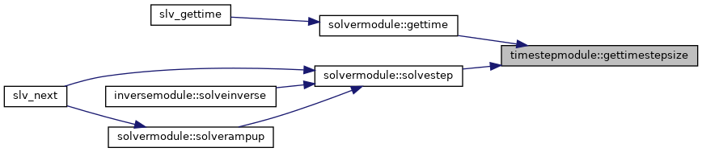
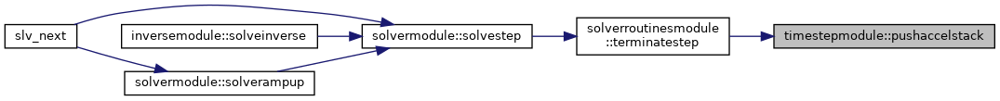

|
FEDEM Solver
R8.0
Source code of the dynamics solver
|
Module with subroutines/functions for automatic time stepping. More...
Functions/Subroutines | |
| subroutine, public | pushaccelstack (sam, acc, ierr) |
| Pushes the given vector onto the acceleration stack. More... | |
| subroutine | getautostep (sam, sys, errlim, HP, H, HX, istat) |
| Calculates the next time step based on local truncation errors. More... | |
| real(dp) function, public | getinitialtimestepsize (sys, ierr) |
| Returns the length of the initial time step. More... | |
| real(dp) function, public | gettimestepsize (sys, sam, ctrl, errlim, ierr) |
| Returns the length of the next time step. More... | |
| subroutine, public | deallocatetimestep () |
| Deallocates the internal buffers for automatic time stepping. More... | |
Variables | |
| real(dp), dimension(:), pointer, save | a1 |
| Bottom of acceleration stack. More... | |
| real(dp), dimension(:), pointer, save | a2 |
| Middle of acceleration stack. More... | |
| real(dp), dimension(:), pointer, save | a3 |
| Top of acceleration stack. More... | |
| real(dp), dimension(:), allocatable, save | err |
| Internal work array. More... | |
Module with subroutines/functions for automatic time stepping.
The auto-time stepping is based in local trunction errors calculated from the last three acceleration states. This is not much in use any longer and is only kept for historical reasons. The module also handles prescribed time step size defined by a general function (time step engine).
| subroutine, public timestepmodule::deallocatetimestep |
Deallocates the internal buffers for automatic time stepping.
| subroutine timestepmodule::getautostep | ( | type(samtype), intent(in) | sam, |
| type(systemtype), intent(in) | sys, | ||
| real(dp), intent(in) | errlim, | ||
| real(dp), intent(in) | HP, | ||
| real(dp), intent(in) | H, | ||
| real(dp), intent(out) | HX, | ||
| integer, intent(out) | istat | ||
| ) |
Calculates the next time step based on local truncation errors.
| [in] | sam | Data for managing system matrix assembly |
| [in] | sys | System level model data |
| [in] | errlim | Truncation error limit |
| [in] | HP | Previous time step size |
| [in] | H | Current time step size |
| [out] | HX | Next time step size |
| [out] | istat | Status flag:
|


| real(dp) function, public timestepmodule::getinitialtimestepsize | ( | type(systemtype), intent(inout) | sys, |
| integer, intent(out) | ierr | ||
| ) |
Returns the length of the initial time step.
| sys | System level model data | |
| [out] | ierr | Error flag |


| real(dp) function, public timestepmodule::gettimestepsize | ( | type(systemtype), intent(inout) | sys, |
| type(samtype), intent(in) | sam, | ||
| type(controltype), intent(in) | ctrl, | ||
| real(dp), intent(in) | errlim, | ||
| integer, intent(inout) | ierr | ||
| ) |
Returns the length of the next time step.
| sys | System level model data | |
| [in] | sam | Data for managing system matrix assembly |
| [in] | ctrl | Control system data |
| [in] | errlim | Truncation error limit |
| ierr | Error flag |


| subroutine, public timestepmodule::pushaccelstack | ( | type(samtype), intent(in) | sam, |
| real(dp), dimension(:), intent(in) | acc, | ||
| integer, intent(out) | ierr | ||
| ) |
Pushes the given vector onto the acceleration stack.
| [in] | sam | Data for managing system matrix assembly |
| [in] | acc | Acceleration vector to be pushed |
| [out] | ierr | Error flag |

|
private |
Bottom of acceleration stack.
|
private |
Middle of acceleration stack.
|
private |
Top of acceleration stack.
|
private |
Internal work array.